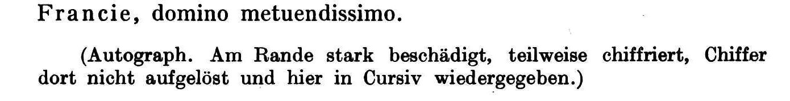
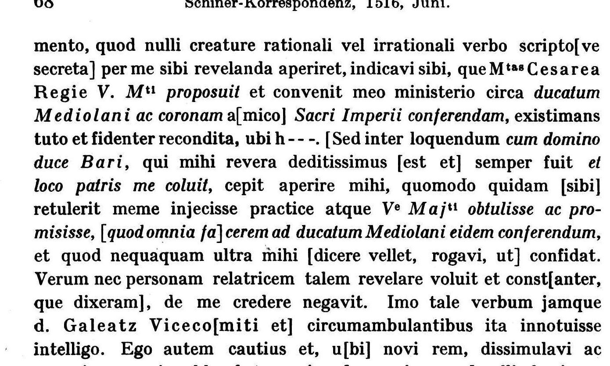

At a glanceExisting decipherment · complete
- The letter
- Matthäus Schiner, cardinal of Sion, to Henry VIII, in his own hand, Trent, 14 June 1516: four pages of Latin with words and phrases in cipher.
- Where
- British Library, Cotton MS Vitellius B XIX, f. 131 in the old foliation that Letters and Papers and Büchi cite, f. 129 in the Library’s current catalogue. Burnt at the edges in the Cotton fire of 1731 and not digitised. Catalogue entry 290 here.
- The cipher
- Fourteen stretches, from one word to a 28-word sentence, set into clear Latin, with a monogram for Vestrae Majestati. The signs themselves are unknown here: the leaf is not online and no key was ever printed.
- How it was deciphered
- By Albert Büchi and Traugott Schiess, who rebuilt the keys of Schiner’s correspondence and printed this letter as no. 541 of Korrespondenzen und Akten II (Basel 1925), the deciphered words in italics.
- What it says
- That Maximilian had proposed to Henry, through Schiner, the duchy of Milan and the crown of the Holy Roman Empire. Schiner had told the secret only to Henry’s envoy, and now the Duke of Bari and Galeazzo Visconti were repeating it.
- Still open
- A check of Büchi’s decipherment sign by sign, and the key. Both need the leaf. Four words in the burnt margin are Büchi’s conjectures.
- Credit
- The decipherment is Büchi’s and Schiess’s (1925). Brewer’s Letters and Papers (1864) had already given six of the fourteen passages.
01 The letter
In the spring of 1516 Henry VIII was paying for Maximilian’s campaign to win back Milan from Francis I, and Cardinal Matthäus Schiner, bishop of Sion, led the Swiss who fought for it. The campaign failed. The Swiss mutinied at Bergamo for want of pay, Brescia surrendered to the French and Venetians on 23 May, and the English envoys Richard Pace and Sir Robert Wingfield blamed each other, Galeazzo Visconti and Schiner. In the middle of it Maximilian made Henry an extraordinary offer: the duchy of Milan, and the succession to the Empire itself.
On 14 June, three days after reaching Verona, Schiner answered a letter of Henry’s from London of 8 May. He wrote it himself, four pages of dense Latin, and put the dangerous words into cipher. The letter is in the Cotton library, in a volume the fire of 1731 burnt at the edges, so every line has lost its ends.
J. S. Brewer calendared it in 1864 as Letters and Papers II no. 2044, with a Latin extract full of gaps and the note “partly in cipher, not deciphered … Sense obscure.” The project’s catalogue took that at its word and listed the letter as not deciphered.
02 Büchi and Schiess, 1925
Albert Büchi, professor at Fribourg, collected Schiner’s correspondence for the Quellen zur Schweizer Geschichte. His second volume (Basel 1925, 1516–1527) prints the letter in full as no. 541, pp. 67–72. At the end he says where the cipher went:

His preface explains how. Twenty-nine letters of the volume are partly in cipher, most of them with the decipherment written over the lines, but seven had none. “Keys to them were found nowhere, and had first to be reconstructed.” He did it with the help of Traugott Schiess, the volume’s editor, and they recovered the keys of all but a single letter (no. 582). He names five kinds of cipher, used by Schiner and his agents “above all in dealings with England”. He printed no key and no facsimile.
The letter was found by working through the sources that catalogue entry 290 had not checked. There is no DECODE record, and the British Library record says “Digitised Content: No”. Tomokiyo’s cryptiana item on Schiner is a different letter of 1520. HathiTrust holds Büchi’s volumes behind a bot check, but the Swiss National Library has both on e-Helvetica with a text layer. The text layer drops the italics, so the cipher passages were marked from the page images.
03 What the cipher says
Büchi’s italics mark fourteen passages, 88 words in all, on pp. 67, 68 and 70. They are words and phrases set into clear Latin. Some are chosen for secrecy, and some seem to be ciphered for the practice of it.

| # | In cipher (Büchi) | English |
|---|---|---|
| 1–4 | litteris video moleste ferre, quod nec … nec … doleo; sed summis Mtem … [hujus]modi expende]re | From your letters I see you take it ill that I sent Your Majesty neither news nor anything else. I regret it, but beg Your Majesty to weigh the cause of the neglect. |
| 5 | campum dirigendis | since I left the Val di Sole for the Emperor’s camp, to direct the armies |
| 6–8 | V. Mti proposuit … ducatum Mediolani ac coronam … Sacri Imperii conferendam | I told [the agent, under oath] what the Emperor had proposed to Your Majesty through me: the duchy of Milan, and the crown of the Holy Empire, to be conferred [on him] |
| 9–10 | cum domino duce Bari … et loco patris me coluit | but in talk with the lord Duke of Bari, who is most devoted to me and has honoured me as a father |
| 11 | Ve Majti obtulisse ac promisisse, [quod omnia fa]cerem ad ducatum Mediolani eidem conferendum | [he said someone had told him] that I had offered and promised Your Majesty to do everything to have the duchy of Milan conferred on you |
| 12 | prius ducatum Mediolani sibi usurparat, inde [regi Catholico], quo gubernator in eo fieret, obtulit, et eundem regem Catholicum pro ejus nepote recusare ajunt, et V. Majti obtulisse dicitur | [Galeazzo, double as ever,] first took the duchy of Milan for himself, then offered it to the Catholic King on condition of being its governor; they say the Catholic King refused it for his grandson, and he is said to have offered it to Your Majesty |
| 13 | nequeant letis oculis nec hillari conspicere vultu | [men] cannot look with glad eyes or a cheerful face [on those they hate] |
| 14 | quod aliter quam recte succedere curarunt (!) | [the business,] which they saw to it went other than right |

Every one of the 88 words has a decipherment in Büchi’s text. 84 of them stand on surviving cipher. The other four, [quod omnia] and [regi Catholico], fall in the burnt margin and are Büchi’s conjectures, and two more words are partly restored. The rest of the letter is clear Latin: Schiner’s defence against the men who blackened him to Henry, the welcome he says the Swiss gave him at Bergamo, the fall of Brescia, the lack of a month’s pay, and his view of the peace Wolsey had raised.
04 Letters and Papers and the 1516 abstract
“Not deciphered” was never quite true. Brewer’s extract gives the words of passages 7 to 12: the duchy of Milan, the crown of the Empire, the Duke of Bari (“corrected from Mediolani”, his note says), and Galeazzo’s dealings. His footnote identifies “a monogram in cipher” for Vestrae Majestati inside passages 11 and 12. His marginal summary is the secret itself: “Maximilian’s offer of the Empire and duchy of Milan to Henry is known to Galeazzo and others.” What he left out are passages 1 to 6, 13 and 14. Without the leaf there is no telling whether the passages he gives were lightly disguised or whether he worked them out.
The next leaf of the volume (L&P II 2045, Büchi no. 542) shows that London understood the letter in 1516. It is an abstract made in England of “the letters of the Cardinal of Sion, 14 June, from Trent”. It opens with his complaint that the Duke of Bari “knew everything”, as if he had read the instructions, and that Schiner believed Pace had told him. It then argues that the Roman Empire and the duchy of Milan were neither impossible nor unbecoming for the King. That is the ciphered content of the letter, summarised by its first readers, and it bears out Büchi’s passages 7 to 12.
05 What remains open
- A check of Büchi against the cipher. Cotton Vitellius B XIX is not digitised, so his decipherment could not be compared sign by sign with the leaf (blocker: needs an image of f. 129, old f. 131, from the British Library).
- Four words in the burnt margin, quod omnia and regi Catholico, and parts of two others, are Büchi’s conjectures (blocker: the paper was lost in 1731).
- The key. Büchi and Schiess never printed it. It could be rebuilt from the leaf against their text, or from Schiner’s letter to Wolsey of 5 December 1516 in the same volume (f. 342, Büchi no. 585), which carries a decipherment over the lines (blocker: needs images).
Full texts
The transcription and the decryption of every document on this page, so that the reading can be used and checked. Short files are shown here; all are in the repository.
Büchi 1925, no. 541
Cardinal Schiner at Trent to Henry VIII, 14 June 1516, while leading Maximilian's army in Italy on English money. The cipher holds the secret of the letter: Maximilian had offered Henry, through Schiner, the duchy of Milan and the succession to the Empire.
Decryption
# Cardinal Matthäus Schiner to Henry VIII, Trent, 14 June 1516
# BL Cotton Vitellius B XIX, f. 131 in the old foliation (L&P, Büchi) = f. 129 in the BL's current catalogue.
# Text as printed by A. Büchi (ed.), Korrespondenzen und Akten zur Geschichte des Kardinals Matth. Schiner,
# vol. II (Basel 1925, QSG NF III/6), no. 541, pp. 67-72. Transcribed here from the page images of the
# Swiss National Library's scan (e-helvetica nbdig-59316, vol. 2, PDF pages 94-99), 23 Sept 2026.
#
# Büchi's source note (p. 72): "Autograph. Am Rande stark beschädigt, teilweise chiffriert, Chiffer dort nicht
# aufgelöst und hier in Cursiv wiedergegeben." Italics = the passages in cipher, deciphered by Büchi with
# Traugott Schiess (preface p. IX). Marked here {like this}.
# [ ] = Büchi's restorations where the burnt margin is lost; - - = lost and not restored; ^ = superscript
# abbreviation (M^ti = Majestati, etc.). Letter-spaced proper names in the print are given in plain type.
# Page breaks of the print are marked ||67|| etc.
||67||
Sacratissime etc. — Humanissimis suis ex Lundono 8. preteriti ad me datis {litteris video moleste ferre, quod nec}
momenta occurrentiarum successuumque et bellicarum rerum {nec} cumulata Maj^ti V. quicquam obtulerim. Quod
utique {doleo; sed summis M^tem} eandem efflagito precibus, causam neglectus hujus{modi expende]re} dignetur.
Namque a die, qua ex valle Solis ad M^tis Cesaree {campum dirigendis} exercitibus et bellicis rebus
proficiscebar, nunquam ad Maj^tem [scribendi copia fuit; sed intentus] et residuis tandim pendentibus ac periculis
cavendis salv[us Veronam] perveni, et jam huc usque applicans accelerandis quibusdam ex[peditionibus] triduo
permansi. Et cum nec scriptis nec nuntiis facile vel tute taliu[m fame] veniant, viva voce conferre et discutere
rectius omnia oportere[t coram], que sub secretudinis velamine recondita esse convenit, cum fidei [ingenia hac]
tempestate peregrina sint. Superioribus namque diebus, dum ex ag[entibus] quendam suo sensu abundare ac certis
modis et mediis pergere con[tra animadverterem et in] tramitem, qui mihi et aptior et equior negotiis videbatur,
illum conducere [vellem], exacto jura-
||68||
mento, quod nulli creature rationali vel irrationali verbo scripto[ve secreta] per me sibi revelanda aperiret,
indicavi sibi, que M^tas Cesarea Regie {V. M^ti proposuit} et convenit meo ministerio circa {ducatum Mediolani ac
coronam} a[mico] {Sacri Imperii conferendam}, existimans tuto et fidenter recondita, ubi h - - -. [Sed inter
loquendum {cum domino duce Bari}, qui mihi revera deditissimus [est et] semper fuit {et loco patris me coluit},
cepit aperire mihi, quomodo quidam [sibi] retulerit meme injecisse practice atque {V^e Maj^ti obtulisse ac
promisisse, [quod omnia fa]cerem ad ducatum Mediolani eidem conferendum}, et quod nequaquam ultra mihi [dicere
vellet, rogavi, ut] confidat. Verum nec personam relatricem talem revelare voluit et const[anter, que dixeram],
de me credere negavit. Imo tale verbum jamque d. Galeatz Viceco[miti et] circumambulantibus ita innotuisse
intelligo. Ego autem cautius et, u[bi] novi rem, dissimulavi ac negavi, tametsi valde obstupuerim, [cum scirem me]
nulli alteri rem hanc revelasse, cepique intra memet ipsum varia [cogitare et] timere, ne forte, sicuti relator
ipse non tacuit, ita alius(?) aliquid cog[noscens] leviter ulterius inficiat, cum periculosissimum existat
hujusmodi excum[ulari] inter tot varietates hominum et trahat sua quemque voluptas: hinc Helvetii, il[linc vero]
Galli tortuosissime interpretari, precavere, inficere vel irritare modo [possent], quod ex post facto vel ex
pretactis practicis condecenter non fieret. [Sed mendacia] queque divi tractus Hieronimi eloquio non timeo, et eo
fortius, quod Galeatz [et nunc] ut sepe duplex, qui {prius ducatum Mediolani sibi usurparat, inde [regi
Catholico], quo gubernator in eo fieret, obtulit, et eundem regem Catholicum pro ejus nepote recusare ajunt, et V.
Maj^ti obtulisse dicitur}. Imperator ergo ambiguis pedibus incedit [et inter tales] constitutus nec celare eis nec
et ita inficere quivit valde res, ut e[as erga M^tem] V. reticere vel non revelare pro scelere mihi imputari
crederem, re[linquens judicium] istiusmodi discriminum M^tis V. moderamini, nisi in hoc deliquerim, quod illi
aperire auserim, quem nisi Regie M^tis V. oratorem et creditissimum cog[novissem, usque] ad mortem tacuissem.
Quantum ad reliqua cum M^te Cesarea conferenda tractandaque pertinet, [etsi non cum] eadem fuerim, scriptis tamen
aliisque mediis decertavi tant[opere, ut] polliceri valeam, et pro eadem polli-
||69||
ceor in omnibus et pro omnibus [eandem] equissime et confidentissime agere, incedere et perseverare [in dictis]
atque pollicitis cum mirabili ardoris, amoris ac [fervoris progressu] et incremento, ut post divinam bonitatem
sor - - (eine Zeile unleserlich). [Nihilominus volueram,] ut jussioni M^tis V. obedirem ac officio debiti mei
satisfacerem, [causas re]cessus istinc ei(?) insinuare. Coactus autem pro rerum oportunitate inter[esse pacis]
articulis eisque locis versari et in facie hostium morari, qui nuntiis [inusitati], minor affuit commoditas. Et
quoniam in hiis omnibus, que gesta sunt [adhuc], alii agentes Regie M^tis V. intervenerunt nec aliquid honore vel
[laude,] quin potius multa reprehensione digna commissa fuerunt tam in conducendis [militibus quam] procedendo in
facto atque exponendo et profundendo peccunias, [verebar], ne, si, quia aliter nunquam solitus sum, veritatem
scriberem, debuissem reprehendere gestas res. [Quare, ne volens] recitare eandem potius judicarem, abstinendum
censui hocque eo fortius [doleo, quod] aliquos morsibus et odiis me prosequi et apud Regiam M^tem scriptis et
verbis lacerare didicerim, qui, utinam aures monitis et gressus directionibus meis accomodassent, nisi aliud deo
optimo placuisset, Regiam M^tem votis omnibus compotem seque apud eandem meritis laudibusque cumulatos
reddidissent. Etenim neminem fallere unquam cum Gallis, quia nec commercium nec practicam, subjectionem nec
uxorem, natos nec ab eis dona habere solitus neque prodigus vel, quod creditam peccuniam et provinciam mihi male
administraverim, consitus, ymo mea impendere, non aliena pessumdare et pro tali etiam a Romanis pontificibus et
aliis, pro quibus administravi, ex multo tempore compertus et habitus fui.
Mihi quoque cum Helvetiis 20 annorum continua practica, notitia exercitiumque est et eloquium sine interprete.
Quibus, si recte sentiant, fui in cumulum et instaurationem multi honoris et commodi, et quando meis monitis
incesserunt, honoribus abundarunt; aliter autem, aliter ubi fecerunt, utique eis evenit. Verum, qui ex eis Gallis
favent innumeri, et alii, ubicunque eis et sortis quicquid adverse et contrarie accidit, uti ipsimet Galli,
originem et causam ex me producere et ultionem in me retorquere moliuntur, tanquam vestucam omnem contrarietatum me
conculcato erutam existimarent. Et, si ubique tela in me congeminant, odoratus sum quoque a longe emulos aliquos
ad Regiam usque M^tem V. et alibi detulisse Helve-
||70||
tios pro odio, quo mihi afficiebantur, in Bergamo dissidium, tumultus et retractionem feci[sse], ne mecum
militarent. Mira res: cum audissent vidissentque ad se me venientem, omnes subito letitia et plausu immenso moti
occurrere, vias, portas et fenestras implendo, ut viderentur et lapides et omnia gaudio adventus mei concrepare et
plerique lacrimis madere, qui, si odio vel livore contra me arsissent, cum an[tiquitus notum] cuique judicum sit
et hominibus, ut, quos oderint, {nequeant letis oculis nec hillari conspicere vultu}. Sed ut noctuis odiosa et
occulis egris est lux, ita quidam directores agentes Regii ac duces turmarum et negotio, {quod aliter quam recte
succedere curarunt} (!), et meo honori invidendo, cum ex eo male gesta per illos dolosque reparari et cognosci
cernerent, fremere extunc et loqui ceperunt, quod n[on ex] mea sententia succederent negotia, sed aliter, adeoque
per dies et noctes binas [dif]fidentiam 3^ii stipendii imprimere disseminareque inter Helvetios mala ac
tumul[tuosa tentarunt], ut, quo res conduxerint, omnibus notissimum existat. Hinc periclitare [retro]gradi cuncta
ceperunt, qui, nisi promissis et proprie persone sponsione reparassem, [ipsi] cum Helvetiis simul abiissent, ut
uno eodemque contextu et copie et machine [appellate] blidin Cesarei exercitus Gallis preda fuissent et, quicquid
Cesar in Italia [habuit], hostium devenisset. Adeoque increbuit malum, ut, antequam condigne - - - Brixia, cujus
fructus 100000 Ducat. sunt, hostibus dedita fuerit, [nisi] 60000 fl. applicata fuissent. Jamque Veronam
amittebant, [et Gallorum non]nulli ceperunt vastatis campis et perust[is vicis urbem obsidere] munitam militibus,
tum, quia 4000 Helvetiorum hinc descensuros [audirent, non solum fugerunt], sed et naves quasdam pro ponte jactas,
anchoras et alia [reliquerunt] adeo, ut ex Brixia, prout exploratores referunt, et [erumpere et arcem hostibus]
eripere illinc 300 rusticis presidio dimissis studuerunt - - viribus spes certe pendet, eisdem civitate et arce
recuperatis - - quassata fuerunt. Neque etenim milites viribus, experientia et rec[titudine inferiores, sed] nos
auri stipendiorumque unius integri mensis penuria impedivit, quibus et peditatum crescere et equites, quibus
egemus valde, [conducere] Gallos ab Italia pellere et Venetos quatere sufficienter [possemus. Que omnia] jam in
promptis contingi et simul et semel haberi possent. Alia - - aliaque deficiunt, que simul habita
||71||
totam victoriam largirentur, post - - ex nunc in terris recuperabitur, quod non solum non ultra alias pet - -
restituere et totum bellum usque in Gallias prosequi valeremus.
Ep[iscopus] Eboracensis suis ad me datis commemorat de pace satis [a] Cesarea M^te tractanda. Re vera nemo est et
nec Cesar, qui illam dudum non optaverit, pro [qua instauranda] et Romani pontifices bini, reges ac principes multa
fecerunt. Numquam [autem] nisi involucris ludere nec unquam ad condigna capitula venire voluerunt. [Que fuit]
maxima causa tot annis non solum Italice, verum et Christianitatis tocius ca[villationis]. Qui, si justis pactis
contenti fuissent, jam dudum pax reddita et Teucris(?) esset, et Gallia per Regiam M^m V., dum ad eam Cesarea
M^tas descendebat visendam, [expugnata] foret. Quam tunc Cesaream M^tem novis acerrimisque bellis perurgebant [ad
her]endum, et sic incassum vota omnia hinc inde abierunt. Et nu[nc Galli] post habitam Brixiam adeo inflati sunt,
quod nec conditiones ullas pa[cis adhuc] obirent. Pretendunt etiam, et sic cum Gallis pacta habent, omnia dudum
[ab aliis] usurpata, que etiam Romana ecclesia et quique alii recuperavere, in suam d[itionem] venire, et jam
Cremam pretextu rehabite Brixie dicitur Gallus cess[isse Gallis, quod] ambitionis aviditatisque hujusmodi non
solum, verum et vere ruine sue [indicium puto, imo] quod Brixia recuperari queat, si pauca suffragia Cesari non
desint, preh[abitaque Brixia Gallis] pulsis, Crema cum ducatu recuperaretur. Quod si Veneti Cremam tenerent,
[nunquam pax] esset. Vereor profecto et Papam judicare audivi, Venetos nunquam nisi Italia usurpata quieturos, nec
Italie ullam requiem polliceri posse nisi [repulsis e]is ad solitas paludes. Quod ubi recte intellectum erit, nec
dis[putandum] erit. Verum tamen nec Cesaream M^tem pacem decentem respuere credo, nec [unquam] deficiam id Sue
M^ti legittime persuadere, quo Regie V. M^ti inservire [queam]. Si qua demum alia circa expeditionem antehabitam
atque in eadem [significanda erant], oratoribus et agentibus M^tis V. per singula insinuare curavi [neque dubito],
quod simul suas et debiti mei erga eandem M^tem V. impleverint V. eidem M^ti notificando. Ego quidem, ne
molestias litteris molesti negotii M^ti V. Regie cumularem, abstinui a litteris; siquidem autem eadem [M^tas]
singula scire cupiat, ut jusserit, vota persolvam, qui et hec s - - - nisi nimiam tum honoris mei, quem
immaculatum, uti ser[vavi,
||72||
servabo], quia cumulatis omnibus et anime et corporis viribus supra subinteligendo - - devotionem meam consecravi
M^ti V. Sacrat^me, cujusque [laudem auxisse] plus quam universos mundi tesauros lucrifecisse leta[bor], - - istorum
jacturam veritus invitus conservare cum - - - adimi et Regiam gratiam - - - mens communico, etsi Archidiaconus,
servitor meus, non dudum a M^te V. [rec]esserit, qui sigillatim et per singula nova hic, et que continuo
acci[derunt, retulit]. Quos audire et me servulum suum perpetuum fidelissimumque inter [omnes nume]rare et
comendatum habere dignetur, quandoque auxilii mei reminiscendo - - is^ma et ac fidei sacre et reipublice
Christiane augendis honoribus - - - que commodis veluti sanxitum in celo creditur, perficiendum in terris.
Incolumis - - - Tridenti, 14. Junii.
Adresse: Christianissimo ac sacratissimo d. d. regi Anglie ac Francie, domino metuendissimo.Decryption
# The 14 cipher stretches of Büchi no. 541 (his italics), in order. [ ] = Büchi restoration of burnt margin. # Columns: n <tab> words <tab> restored words <tab> plaintext 1 6 0 litteris video moleste ferre, quod nec 2 1 0 nec 3 4 0 doleo; sed summis M^tem 4 2 0 modi expende]re 5 2 0 campum dirigendis 6 3 0 V. M^ti proposuit 7 4 0 ducatum Mediolani ac coronam 8 3 0 Sacri Imperii conferendam 9 4 0 cum domino duce Bari 10 5 0 et loco patris me coluit 11 13 2 V^e Maj^ti obtulisse ac promisisse, [quod omnia fa]cerem ad ducatum Mediolani eidem conferendum 12 28 2 prius ducatum Mediolani sibi usurparat, inde [regi Catholico], quo gubernator in eo fieret, obtulit, et eundem regem Catholicum pro ejus nepote recusare ajunt, et V. Maj^ti obtulisse dicitur 13 7 0 nequeant letis oculis nec hillari conspicere vultu 14 6 0 quod aliter quam recte succedere curarunt # total words 88; restored 4
Translation
<!-- English translation of buchi1925_no541.txt (Claude Opus 5.5, 23 Oct 2026): Cardinal Matthäus Schiner to Henry VIII, Trent, 14 June 1516, as printed by Büchi (1925) no. 541 from the autograph, whose cipher passages Büchi and Schiess deciphered (in italics there, {braces} in the transcription, ⟦ ⟧ here). Büchi's restorations of the burnt margin are kept in [ ]; - - = lost and not restored, kept as —; (?) and (!) as printed. Where the damaged Latin breaks off, the English breaks off with it. -->
# Cardinal Matthäus Schiner to Henry VIII, Trent, 14 June 1516 (Büchi 1925 no. 541): English translation
Most Sacred [Majesty], etc. — From Your Majesty's most kind ⟦letter⟧ sent to me from London on the 8th of last month ⟦I
see that you take it ill that I have not⟧ offered Your Majesty anything of the course of events, of the outcome of
things and of the affairs of war, ⟦nor⟧ in full. Which indeed ⟦I regret; but with the utmost⟧ prayers I beg the same
⟦Majesty⟧ to deign to ⟦weigh⟧ the cause of this neglect. For from the day on which I set out from the Val di Sole to
the Imperial Majesty's ⟦camp, to direct⟧ the armies and the affairs of war, I never [had the means of writing] to Your
Majesty; [but, intent] on the remaining pending matters and on guarding against dangers, I at last reached [Verona]
safe, and having now come as far as here, I have stayed three days to speed certain ex[peditions]. And since news of
such [matters] does not come easily or safely either by letters or by messengers, it would [be] more right to confer
and discuss everything by word of mouth [in person], which ought to be kept hidden under the veil of secrecy, since
[minds of] good faith are strangers in these times. For in the past days, when I [noticed] that one of the [agents]
was abounding in his own sense and proceeding by certain ways and means [against it, and I wished] to bring him onto
the path that seemed to me both fitter and fairer for the business, having exacted an oath that he would not disclose
to any creature, rational or irrational, by word [or] writing, the [secrets] I was to reveal to him, I showed him what
the Imperial Majesty ⟦proposed to Your Royal Majesty⟧ and agreed, through my ministry, concerning ⟦the duchy of Milan and
the crown⟧ ⟦of the Holy Empire to be conferred⟧ on a [friend], thinking them safely and faithfully hidden where h — —.
[But while] talking ⟦with the lord Duke of Bari⟧, who [is] and always has been truly most devoted to me ⟦and has
honoured me as a father⟧, he began to disclose to me how someone had told [him] that I had put forward dealings and ⟦had
offered and promised Your Majesty [that I would do all] to have the duchy of Milan conferred on it⟧; and, as he [would]
not [tell] me anything more, [I asked him to] trust me. But he would not reveal the person who had told him, and
stead[fastly] refused to believe of me [what I had said]. Indeed I understand that such a word has already become known
to the lord Galeazzo Visconti [and] those around him. I, however, more cautiously, wh[en] I knew the matter, dissembled
and denied it, although I was greatly astonished, [since I knew that I] had revealed this matter to no one else; and I
began to [think] various things within myself and to fear that perhaps, just as the teller himself did not keep quiet,
so another(?), knowing something, might lightly taint it further, since it is most dangerous for such a thing to be
heaped up among so many varieties of men, and each is drawn by his own pleasure: on this side the Swiss, [on that] the
French [could] interpret most tortuously, forestall, taint or provoke what would not then be done fittingly after the
fact or from the dealings already touched upon. [But lies] of whatever kind I do not fear, by the saying of Saint
Jerome, and so much the more strongly because Galeazzo, [even now], as often, double, who ⟦had earlier usurped the duchy
of Milan for himself, then offered it to [the Catholic King], that he might become its governor in it; and they say
that the same Catholic King refused it on behalf of his nephew, and he is said to have offered it to Your Majesty⟧. The
Emperor therefore walks with uncertain feet, and, placed [among such men], could neither hide it from them nor so taint
matters greatly, that I believed it would be imputed to me as a crime to keep silent about [them towards] Your
[Majesty] or not to reveal them, leaving [the judgement] of such hazards to Your Majesty's discretion, unless I have
erred in this, that I dared to disclose it to him whom, had I not known him to be Your Royal Majesty's ambassador and
most trusted, I would have kept silent [until] death.
As for the rest that pertains to what is to be conferred and negotiated with the Imperial Majesty, [although I was not
with] him, I have nevertheless striven by letters and other means so much [that] I can promise, and on his behalf I
promise, that in all things and for all things he will act, proceed and persevere most fairly and most confidently [in
what has been said] and promised, with a marvellous [advance] and increase of ardour, love and [fervour], so that after
the divine goodness sor — — (one line illegible). [Nevertheless I had wished,] to obey Your Majesty's command and to
satisfy the duty I owe, to make known to it the [reasons for my] departure from there. But being compelled, as
circumstances required, to [take part in] the articles [of peace] and to be busy in those places and to stay in the face
of the enemy, who were [unused] to messengers, there was less opportunity. And since in all these things that have been
done [so far] other agents of Your Royal Majesty have intervened, and nothing has been committed worthy of honour or
[praise], but rather much worthy of reproach, both in hiring [soldiers and] in proceeding in the matter and in laying out
and pouring out money, [I feared] that if I wrote the truth — since I have never been used to do otherwise — I would
have had to reproach what was done. [Therefore, lest, wishing] to recount it, I should rather seem to judge it, I
thought I should abstain; and [I grieve] at this the more strongly [because] I have learned that some pursue me with
bites and hatred, and tear me to pieces before the Royal Majesty in writing and in words; who, would that they had
lent their ears to my warnings and their steps to my directions! — unless it had pleased God, best of all, otherwise —
they would have made the Royal Majesty master of all its wishes, and themselves loaded with merit and praise before it.
For I have never been found, over a long time, to deceive anyone with the French, since I have been used to have
neither dealings nor practices with them, nor subjection, nor wife, nor children, nor gifts from them; nor prodigal,
nor to have ill administered the money and the province entrusted to me; on the contrary, to spend my own, not to ruin
what belongs to others; and as such I have been held also by the Roman pontiffs and others for whom I have
administered.
I also have twenty years' continuous practice, knowledge and exercise with the Swiss, and speech without an
interpreter. To them, if they judge rightly, I have been for the heaping up and restoring of much honour and advantage;
and when they followed my warnings they abounded in honours; but when they did otherwise, it went otherwise with them.
But those among them who favour the French, and they are countless, and others, wherever anything adverse and contrary
befalls them and their fortune, like the French themselves, strive to derive the origin and cause from me and to turn
vengeance back on me, as though they thought that every straw of opposition would be rooted out once I was trodden
down. And if they redouble their darts against me everywhere, I have also scented from afar that some rivals have
reported even to Your Royal Majesty and elsewhere that the Swiss, out of the hatred with which they were moved against
me, made dissension, tumult and withdrawal at Bergamo, so as not to serve with me. A marvellous thing: when they heard
and saw me coming to them, all of them, suddenly moved with joy and immense applause, ran to meet me, filling the
roads, gates and windows, so that even the stones and everything seemed to resound with joy at my coming, and many
were wet with tears; who, if they had burned with hatred or envy against me, since it has been known of old to every
judge and to men that those whom they hate ⟦they cannot look upon with glad eyes or a cheerful face⟧. But as the light is
hateful to owls and to sick eyes, so certain directors, the royal agents and captains of troops, and the business,
⟦which they took care should succeed otherwise than rightly⟧ (!), envying my honour, when they saw that by it the things
they had ill done and their frauds were being repaired and recognised, began from then on to grumble and to say that
the business was not going according to my view, but otherwise; and so much that for two days and nights [they tried]
to stamp the distrust of a third pay, and to sow evil and tumult among the Swiss, so that it is most notorious to all
where they led matters. From then on everything began to be in danger and to go [backwards]; and if I had not repaired
it by promises and by the pledge of my own person, they [themselves] would have gone off together with the Swiss, so
that in one and the same course both the troops and the engines [called] blidin of the Imperial army would have been
the prey of the French, and whatever the Emperor [had] in Italy would have come to the enemy. And the evil grew so far
that, before fittingly — — — Brescia, whose revenues are 100,000 ducats, was surrendered to the enemy, [unless] 60,000
florins had been applied. And they were already losing Verona, [and some of the French] began, having laid waste the
fields and burnt [the villages, to besiege the city], garrisoned with soldiers; then, because they [heard] that 4,000 Swiss
were to come down from here, [they not only fled], but [left behind] also some boats thrown across as a bridge, anchors
and other things, so much that from Brescia, as the scouts report, they strove both [to sally out and to snatch the
citadel from the enemy], having left 300 peasants as a garrison there — — the hope certainly hangs on the forces, the
city and citadel having been recovered by them — — were shaken. For the soldiers are not [inferior] in strength,
experience and up[rightness, but] the want of gold and of one whole month's pay has hindered us, with which we could
sufficiently both increase the infantry and [hire] the horsemen, whom we greatly need, drive the French from Italy and
shake the Venetians. [All of which] could now be readily achieved and had at once and together. Other — — and other
things are lacking, which, had together, would bestow the whole victory, after — — from now on will be recovered in the
lands, that not only not further other pet — — restore, and we would be able to pursue the whole war even into France.
The [Bishop] of York, in his letter to me, speaks of a peace to be negotiated sufficiently by the Imperial Majesty. In
truth there is no one, nor the Emperor, who has not long wished for it; for [whose restoration] two Roman pontiffs, kings
and princes have done much. But they [never] wished to play except with wrappings, nor ever to come to fitting
articles. [Which was] the greatest cause, for so many years, of the [cavilling] not only of Italy but of all Christendom.
If they had been content with just pacts, peace would long since have been restored, and to the Teucri(?) too, and
France would have been [conquered] by Your Royal Majesty while the Imperial Majesty was coming down to visit it. Then
they pressed the Imperial Majesty with new and most bitter wars [to adhere], and so all wishes on both sides came to
nothing. And n[ow the French], after taking Brescia, are so puffed up that they would not [yet] entertain any
conditions of pe[ace]. They also claim — and so they have pacts with the French — that everything long [usurped by
others], which the Roman Church and every other have recovered, should come into their p[ower]; and the Frenchman is
already said to have ced[ed] Crema [to the French] on the pretext of having recovered Brescia, which [I take as a sign]
not only of such ambition and greed but truly of their ruin, [nay rather] that Brescia can be recovered, if a few aids
are not lacking to the Emperor, and, [once Brescia is taken and the French] driven out, Crema with the duchy would be
recovered. And if the Venetians held Crema, there would [never be peace]. I fear indeed, and I have heard the Pope
judge, that the Venetians will never be quiet unless they have usurped Italy, nor can any rest be promised to Italy
unless they are [driven back] to their usual marshes. When this is rightly understood, there will be no need to argue
it. Yet I do not believe that the Imperial Majesty rejects a fitting peace, nor shall I [ever] fail to persuade His
Majesty of it lawfully, so that I [may] serve Your Royal Majesty. If at last there were any other things concerning the
earlier expedition and [to be reported] about it, I have taken care to make them known point by point to Your
Majesty's ambassadors and agents, [and I do not doubt] that they will have fulfilled their duty and mine towards Your
same Majesty by informing Your Majesty. I for my part abstained from letters, so as not to heap the troubles of a
troublesome business on Your Royal Majesty by letters; but if the same [Majesty] wishes to know every particular, I
shall fulfil its wishes as it commands, who also these s — — — except too much then of my honour, which, as I have
kept it unstained, [I shall keep], because with all the strength of soul and body heaped together, understanding
above — — I have consecrated my devotion to Your Most Sacred Majesty, to have [increased] whose [praise] I shall rejoice
in more than to have gained all the treasures of the world, — — fearing the loss of these, unwillingly to preserve
with — — — to be taken away and the Royal favour — — — I communicate my mind, although the Archdeacon, my servant,
[left] Your Majesty not long ago, who [reported] one by one every piece of news here and what continually [happened].
May it deign to hear them, and to number me among [all] its perpetual and most faithful little servants and hold me
commended, remembering at some time my help — — most [—] and of the sacred faith and of the Christian commonwealth,
for increasing honours — — — and advantages, as it is believed to be decreed in heaven, to be accomplished on earth.
Safe — — — Trent, 14 June.
Address: To the most Christian and most sacred lord, the lord King of England and France, his most dread lord.06 Sources
- A. Büchi (ed.), Korrespondenzen und Akten zur Geschichte des Kardinals Matth. Schiner, vol. II (1516–1527), Basel 1925 (Quellen zur Schweizer Geschichte, Neue Folge III/6): preface pp. VIII–IX; no. 541, pp. 67–72; no. 542, pp. 72–79. Scan on e-Helvetica (Swiss National Library, nbdig-59316).
- J. S. Brewer (ed.), Letters and Papers, Foreign and Domestic, Henry VIII, vol. II (1864), nos. 2044–2045, British History Online.
- British Library, Cotton MS Vitellius B XIX, catalogue record 040-001102999, items 57–58 (ff. 129–131).
- S. Tomokiyo, Cryptiana, “A Letter to Cardinal Schiner (1520)”: a different letter and cipher, solved by G. Nicollier, M. Jacquemet and G. Evéquoz.
The full text with the cipher passages marked, the list of passages and the profile are in targets/schiner1516/.